lorenz_partial_25d_additive_mse_uniform_p10_obsnoise005__lc_sweepProject: Lorenz_INDpartial_N25_D1_NormTrue_T3__JacobianODE
Launched: 2026-04-18T18:40:12Z
Completed: 2026-04-18T22:55:15Z
Outcome: complete_clean
Git: latent-JacobianODE @ 2b130bb
Expected runs: 9
lorenz_partial_25d_additive_mse_uniform_p10_obsnoise005__lc_sweepDescription
Same base as lorenz_partial_25d_additive_mse_uniform (prediction_steps = 10, seq_length = 25) with obs_noise=0.05. 9-run LC sweep; direct p10 counterpart to lorenz_partial_25d_additive_mse_uniform_p30_obsnoise005__lc_sweep.
Hypothesis
At obs_noise=0.05 the p30 rollout horizon may be too long to supervise cleanly: accumulated latent-space noise over 30 steps could dominate the signal, making the dynamics gradient noisier than informative. p10 trades forward-rollout reach for per-step signal-to-noise and may train more stably at this noise level. Expect p10 val traj_loss at best LC to be comparable-or-better than p30 at best LC; λ_min estimation may favour whichever horizon gives a better bias/variance trade-off in the Jacobian trace.
Success criteria
Swept axes (1): training.lightning.loop_closure_weight
Chosen run (by best_traj_loss): kh91xdlk — traj_loss=0.00472, MASE=0.7599, R²=0.9870, LC loss=51.773, epoch=104.0
Swept-axis values at chosen run: training.lightning.loop_closure_weight=0
⚠️ 4 run_idx slot(s) had multiple matching wandb runs — the best by best_traj_loss was kept; the others are listed below for audit:
- run_idx=4: chose q3txarzz, dropped v21d9ys2
- run_idx=5: chose x8albycb, dropped k70npk2w
- run_idx=6: chose rf9u5f45, dropped vub7yoxo
- run_idx=7: chose hgo7pgo9, dropped 1fsnpoxe
Runs analyzed: 9 (expected 9)
| run_idx | run_id | training.lightning.loop_closure_weight |
best_traj_loss | best_MASE | R² | LC loss | epoch |
|---|---|---|---|---|---|---|---|
| 0 | kh91xdlk |
0 | 0.00472 | 0.7599 | 0.9870 | 51.773 | 104.0 |
| 2 | usbgi6wa |
1.0e-05 | 0.00494 | 0.7730 | 0.9864 | 1.806 | 84.0 |
| 3 | xkn0wd31 |
1.0e-04 | 0.00518 | 0.7875 | 0.9858 | 0.170 | 89.0 |
| 1 | meldypc1 |
1.0e-06 | 0.00524 | 0.7903 | 0.9856 | 12.218 | 49.0 |
| 4 | q3txarzz |
0.001 | 0.00538 | 0.7969 | 0.9852 | 0.015 | 81.0 |
| 5 | x8albycb |
0.01 | 0.00623 | 0.8311 | 0.9829 | 0.001 | 56.0 |
| 6 | rf9u5f45 |
0.1 | 0.00641 | 0.8566 | 0.9824 | 0.001 | 86.0 |
| 7 | hgo7pgo9 |
1 | 0.00768 | 0.9442 | 0.9788 | 0.000 | 45.0 |
| 8 | qw38esm1 |
10 | 0.01654 | 1.3037 | 0.9544 | 0.000 | 31.0 |
| Criterion | Verdict | Note |
|---|---|---|
| Best val traj_loss finite and within ~5× of the p30 obsnoise005 companion | Unknown | |
| λ_min at best LC still meaningfully negative (< -5) | Unknown | |
| No loop-closure explosion (max LC loss at best_tl < 10 across the sweep) | Unknown |
Automated verdicts use simple numeric-threshold parsing and may mis-classify qualitative criteria. The Discussion section below takes precedence.
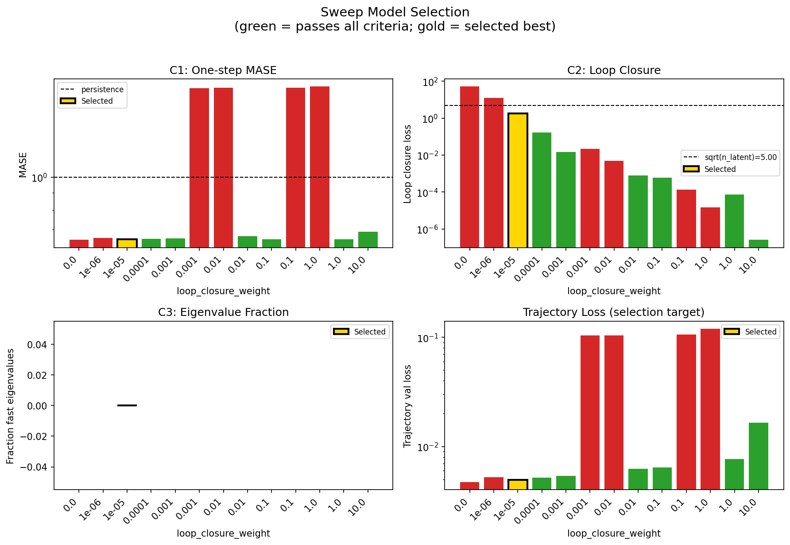
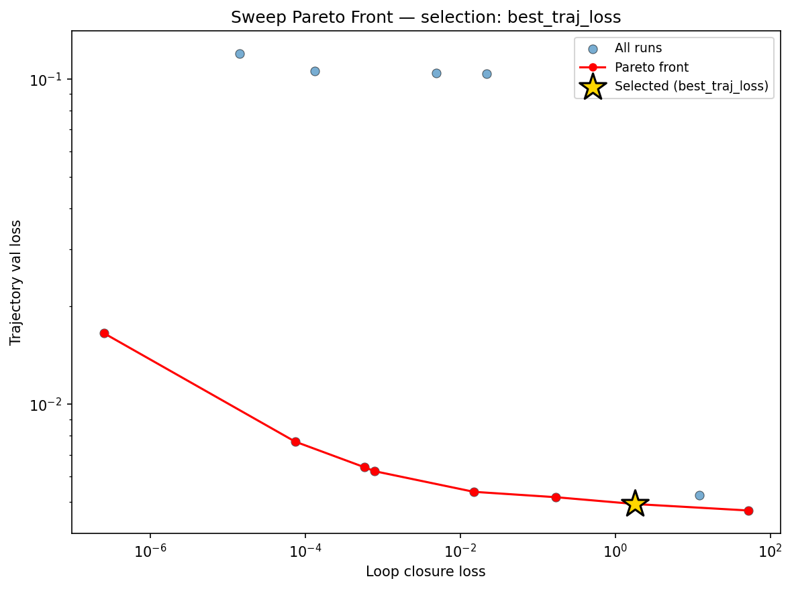
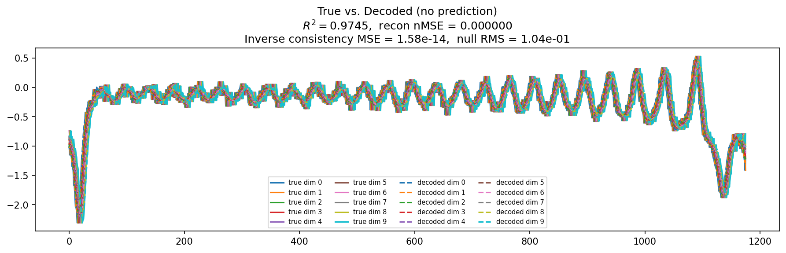
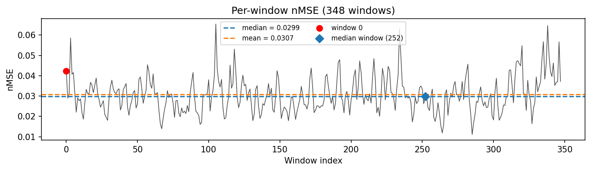
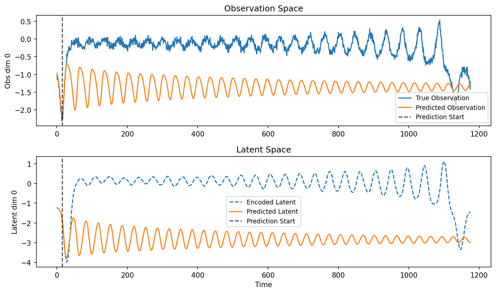
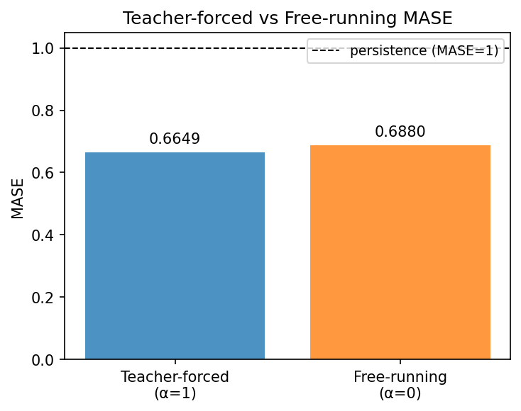
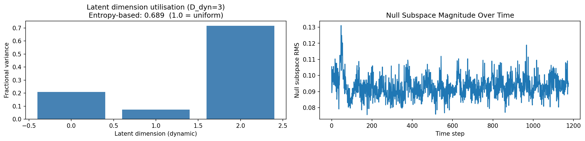
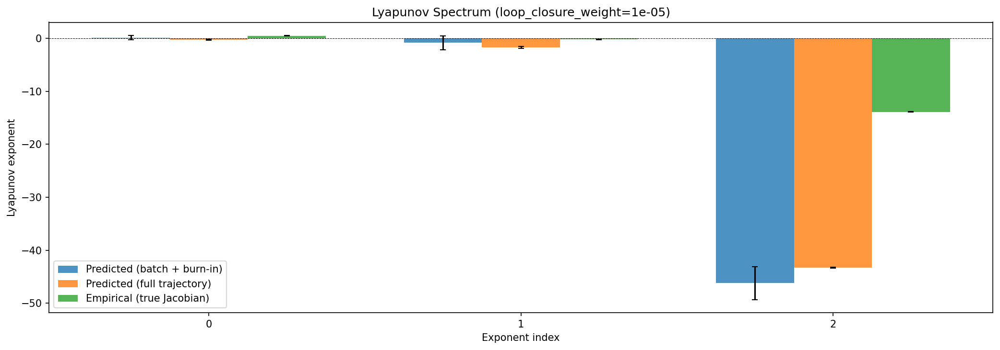
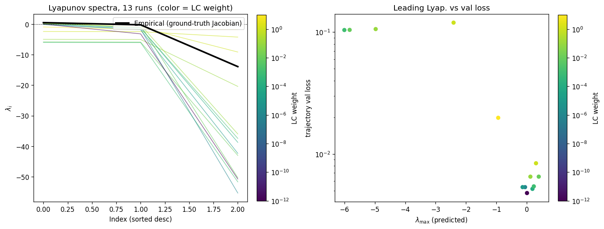
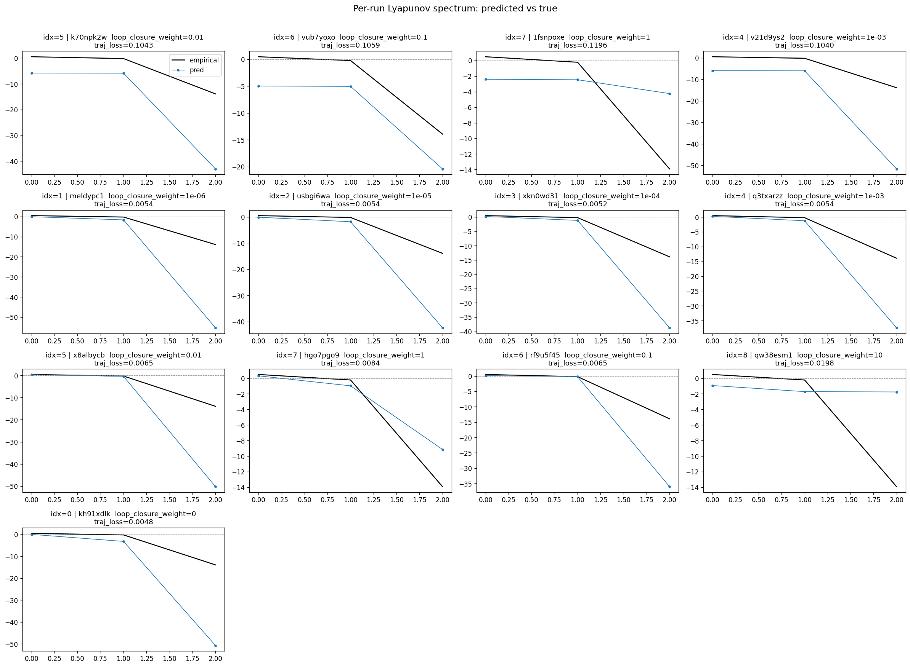
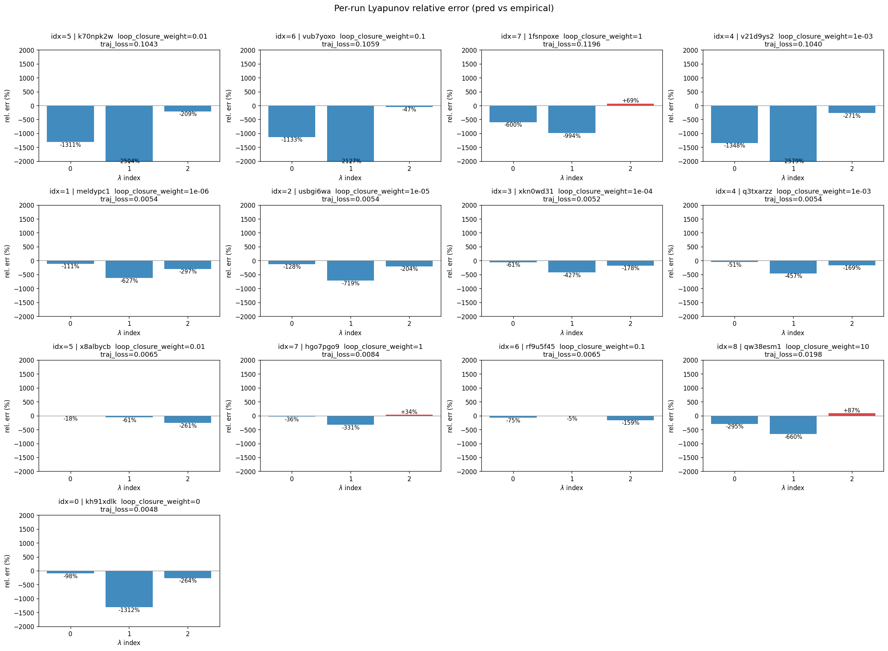
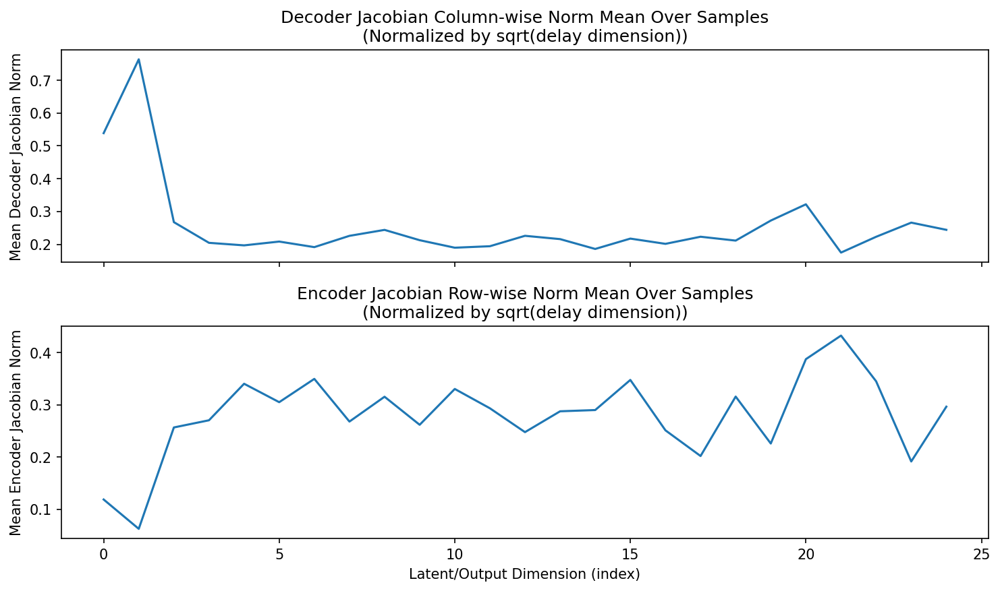
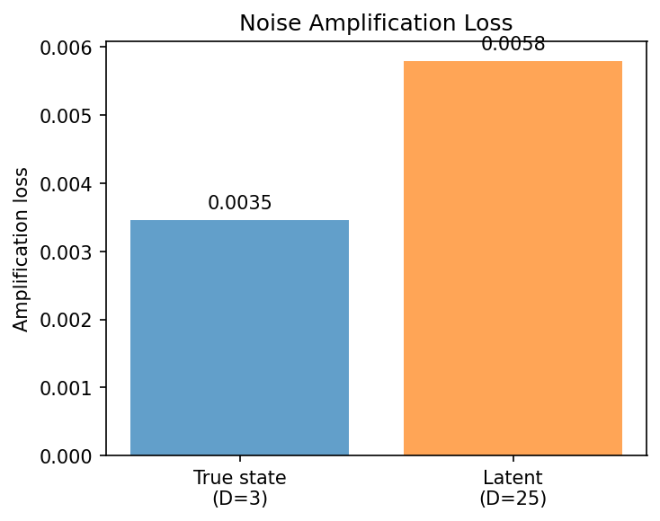
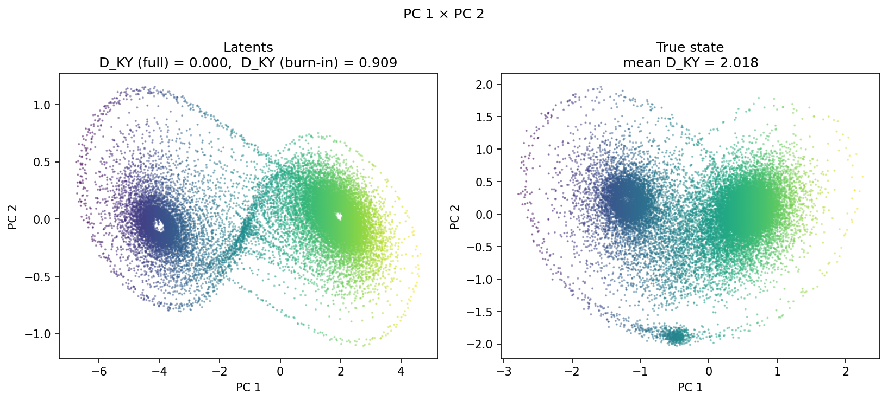
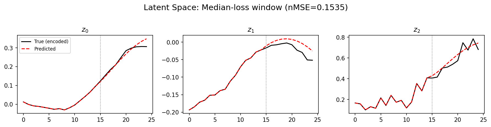
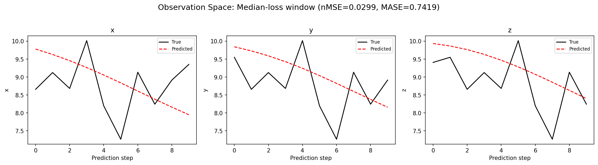
(to be written)
run_analytics stdoutrun_analyticsNo run_id provided — selecting best run from group 'lorenz_partial_25d_additive_mse_uniform_p10_obsnoise005__lc_sweep' ...
Found 14 total runs in JacobianODE/Lorenz_INDpartial_N25_D1_NormTrue_T3__JacobianODE (group=lorenz_partial_25d_additive_mse_uniform_p10_obsnoise005__lc_sweep)
All runs (state, loop_closure_weight, tangent_entropy_weight, kl_dyn_weight):
k70npk2w: state=crashed, lc=0.01, te=0.0, kl_dyn=0.0
vub7yoxo: state=crashed, lc=0.1, te=0.0, kl_dyn=0.0
1fsnpoxe: state=crashed, lc=1.0, te=0.0, kl_dyn=0.0
v21d9ys2: state=crashed, lc=0.001, te=0.0, kl_dyn=0.0
ez55wxgo: state=crashed, lc=10.0, te=0.0, kl_dyn=0.0
meldypc1: state=finished, lc=1e-06, te=0.0, kl_dyn=0.0
usbgi6wa: state=finished, lc=1e-05, te=0.0, kl_dyn=0.0
xkn0wd31: state=finished, lc=0.0001, te=0.0, kl_dyn=0.0
q3txarzz: state=finished, lc=0.001, te=0.0, kl_dyn=0.0
x8albycb: state=finished, lc=0.01, te=0.0, kl_dyn=0.0
hgo7pgo9: state=finished, lc=1.0, te=0.0, kl_dyn=0.0
rf9u5f45: state=finished, lc=0.1, te=0.0, kl_dyn=0.0
qw38esm1: state=finished, lc=10.0, te=0.0, kl_dyn=0.0
kh91xdlk: state=finished, lc=0.0, te=0.0, kl_dyn=0.0
slurm_timeout_min not found in any run config — falling back to 180 min
Including k70npk2w (lc=0.01): use_all_runs=True (state=crashed)
Including vub7yoxo (lc=0.1): use_all_runs=True (state=crashed)
Including 1fsnpoxe (lc=1.0): use_all_runs=True (state=crashed)
Including v21d9ys2 (lc=0.001): use_all_runs=True (state=crashed)
Including ez55wxgo (lc=10.0): use_all_runs=True (state=crashed)
Including meldypc1 (lc=1e-06): use_all_runs=True (state=finished)
Including usbgi6wa (lc=1e-05): use_all_runs=True (state=finished)
Including xkn0wd31 (lc=0.0001): use_all_runs=True (state=finished)
Including q3txarzz (lc=0.001): use_all_runs=True (state=finished)
Including x8albycb (lc=0.01): use_all_runs=True (state=finished)
Including hgo7pgo9 (lc=1.0): use_all_runs=True (state=finished)
Including rf9u5f45 (lc=0.1): use_all_runs=True (state=finished)
Including qw38esm1 (lc=10.0): use_all_runs=True (state=finished)
Including kh91xdlk (lc=0.0): use_all_runs=True (state=finished)
Found 14 effectively-done sweep runs:
loop_closure_weight=0.0, tangent_entropy_weight=0.0, kl_dyn_weight=0.0 -> run_id=kh91xdlk
loop_closure_weight=1e-06, tangent_entropy_weight=0.0, kl_dyn_weight=0.0 -> run_id=meldypc1
loop_closure_weight=1e-05, tangent_entropy_weight=0.0, kl_dyn_weight=0.0 -> run_id=usbgi6wa
loop_closure_weight=0.0001, tangent_entropy_weight=0.0, kl_dyn_weight=0.0 -> run_id=xkn0wd31
loop_closure_weight=0.001, tangent_entropy_weight=0.0, kl_dyn_weight=0.0 -> run_id=q3txarzz
loop_closure_weight=0.001, tangent_entropy_weight=0.0, kl_dyn_weight=0.0 -> run_id=v21d9ys2
loop_closure_weight=0.01, tangent_entropy_weight=0.0, kl_dyn_weight=0.0 -> run_id=k70npk2w
loop_closure_weight=0.01, tangent_entropy_weight=0.0, kl_dyn_weight=0.0 -> run_id=x8albycb
loop_closure_weight=0.1, tangent_entropy_weight=0.0, kl_dyn_weight=0.0 -> run_id=rf9u5f45
loop_closure_weight=0.1, tangent_entropy_weight=0.0, kl_dyn_weight=0.0 -> run_id=vub7yoxo
loop_closure_weight=1.0, tangent_entropy_weight=0.0, kl_dyn_weight=0.0 -> run_id=1fsnpoxe
loop_closure_weight=1.0, tangent_entropy_weight=0.0, kl_dyn_weight=0.0 -> run_id=hgo7pgo9
loop_closure_weight=10.0, tangent_entropy_weight=0.0, kl_dyn_weight=0.0 -> run_id=ez55wxgo
loop_closure_weight=10.0, tangent_entropy_weight=0.0, kl_dyn_weight=0.0 -> run_id=qw38esm1
Dropping 1 run(s) with no checkpoint dir: ['ez55wxgo']
n_dims=25, n_latent=25, n_dyn=3, dt=0.0150
run=kh91xdlk: DiagnosticMetrics(one_step_mase=0.6522257328033447, loop_closure_loss=51.772857666015625, fast_eigenvalue_fraction=0.0, trajectory_val_loss=0.004715746268630028) (from W&B history)
run=meldypc1: DiagnosticMetrics(one_step_mase=0.6618677377700806, loop_closure_loss=12.217576026916504, fast_eigenvalue_fraction=0.0, trajectory_val_loss=0.0052421516738832) (from W&B history)
run=usbgi6wa: DiagnosticMetrics(one_step_mase=0.6546077728271484, loop_closure_loss=1.806343674659729, fast_eigenvalue_fraction=0.0, trajectory_val_loss=0.0049360208213329315) (from W&B history)
run=xkn0wd31: DiagnosticMetrics(one_step_mase=0.6562239527702332, loop_closure_loss=0.16960382461547852, fast_eigenvalue_fraction=0.0, trajectory_val_loss=0.005181416403502226) (from W&B history)
run=q3txarzz: DiagnosticMetrics(one_step_mase=0.658158540725708, loop_closure_loss=0.015004700049757957, fast_eigenvalue_fraction=0.0, trajectory_val_loss=0.005381413269788027) (from W&B history)
run=v21d9ys2: DiagnosticMetrics(one_step_mase=1.8386732339859009, loop_closure_loss=0.022097058594226837, fast_eigenvalue_fraction=0.0, trajectory_val_loss=0.10403303802013397) (from W&B history)
run=k70npk2w: DiagnosticMetrics(one_step_mase=1.8393521308898926, loop_closure_loss=0.0049584247171878815, fast_eigenvalue_fraction=0.0, trajectory_val_loss=0.10429228097200394) (from W&B history)
run=x8albycb: DiagnosticMetrics(one_step_mase=0.6687455773353577, loop_closure_loss=0.0007925031241029501, fast_eigenvalue_fraction=0.0, trajectory_val_loss=0.00622614286839962) (from W&B history)
run=rf9u5f45: DiagnosticMetrics(one_step_mase=0.6555503010749817, loop_closure_loss=0.0005817735800519586, fast_eigenvalue_fraction=0.0, trajectory_val_loss=0.00640587043017149) (from W&B history)
run=vub7yoxo: DiagnosticMetrics(one_step_mase=1.8434362411499023, loop_closure_loss=0.00013396980648394674, fast_eigenvalue_fraction=0.0, trajectory_val_loss=0.10591065138578415) (from W&B history)
run=1fsnpoxe: DiagnosticMetrics(one_step_mase=1.8565646409988403, loop_closure_loss=1.4403602108359337e-05, fast_eigenvalue_fraction=0.0, trajectory_val_loss=0.11958073824644089) (from W&B history)
run=hgo7pgo9: DiagnosticMetrics(one_step_mase=0.6547940373420715, loop_closure_loss=7.423602801281959e-05, fast_eigenvalue_fraction=0.0, trajectory_val_loss=0.007679395843297243) (from W&B history)
run=qw38esm1: DiagnosticMetrics(one_step_mase=0.6894660592079163, loop_closure_loss=2.537577472594421e-07, fast_eigenvalue_fraction=0.0, trajectory_val_loss=0.0165431946516037) (from W&B history)
Ranking method: best_traj_loss
Best run ID: usbgi6wa
Best loop_closure_weight: 1e-05
Best tangent_entropy_weight: 0.0
Best kl_dyn_weight: 0.0
Best traj loss: 0.004936
Criteria applied: ['C1', 'C2', 'C3']
Surviving: 7 / 13
Auto-selected run_id: usbgi6wa
======================================================================
PARETO FRONTIER RUNS (8 runs)
======================================================================
Run ID LC Loss Traj Val Loss
------------ -------------- --------------
qw38esm1 0.000000 0.016543
hgo7pgo9 0.000074 0.007679
rf9u5f45 0.000582 0.006406
x8albycb 0.000793 0.006226
q3txarzz 0.015005 0.005381
xkn0wd31 0.169604 0.005181
usbgi6wa 1.806344 0.004936 <-- selected
kh91xdlk 51.772858 0.004716
======================================================================
RANKING METHOD COMPARISON (over 7 survivors)
======================================================================
Method Run ID LC Loss Traj Val Loss
---------------------- ------------ -------------- --------------
best_traj_loss usbgi6wa 1.806344 0.004936 <-- active
pareto_knee q3txarzz 0.015005 0.005381
geo_rank usbgi6wa 1.806344 0.004936
minimax_rank x8albycb 0.000793 0.006226
geo_log_score usbgi6wa 1.806344 0.004936
minimax_log_score hgo7pgo9 0.000074 0.007679
======================================================================
Loading run usbgi6wa from JacobianODE/Lorenz_INDpartial_N25_D1_NormTrue_T3__JacobianODE ...
Train dataset shape: torch.Size([25322, 25, 25])
Validation dataset shape: torch.Size([8057, 25, 25])
Test dataset shape: torch.Size([3453, 25, 25])
Train trajectories dataset shape: torch.Size([22, 1176, 25])
Validation trajectories dataset shape: torch.Size([7, 1176, 25])
Test trajectories dataset shape: torch.Size([3, 1176, 25])
Loading checkpoint epoch=84-step=17000.ckpt...
Computing reconstruction ...
Computing MASE ...
Teacher-forced MASE: 0.6649
Free-running MASE: 0.6880
Computing latent utilization ...
Entropy-based utilization: 0.689
Null subspace mean RMS: 9.316390e-02
Computing Lyapunov exponents ...
Computing full-trajectory Lyapunov (3 test trajs, T=1176) ...
Predicted Lyapunov exponents (batch+burn-in, 128 windowed trajs):
λ_1 = +0.1174 ± 0.4081
λ_2 = -0.8588 ± 1.2764
λ_3 = -46.1928 ± 3.1122
Predicted Lyapunov exponents (full-length, 3 test trajs):
λ_1 = -0.2870 ± 0.1218
λ_2 = -1.7476 ± 0.1621
λ_3 = -43.2836 ± 0.1146
Empirical Lyapunov exponents (mean ± std):
λ_1 = +0.4677 ± 0.0259
λ_2 = -0.2173 ± 0.0549
λ_3 = -13.9174 ± 0.0513
Mean KY dim (predicted): 0.000 ± 0.000
Mean KY dim (empirical): 2.018 ± 0.003
Mean KY dim (burn-in): 0.909 ± 0.660
Computing prediction windows ...
Windows: 348 — nMSE min=0.0111, median=0.0299, mean=0.0307, max=0.0655
Computing long trajectory prediction ...
Computing encoder/decoder Jacobians ...
encoder_jacobian: (128, 25, 25)
decoder_jacobian: (128, 25, 25)
Computing amplification loss ...
Amplification loss — True state: 0.003459
Amplification loss — Latent: 0.005797